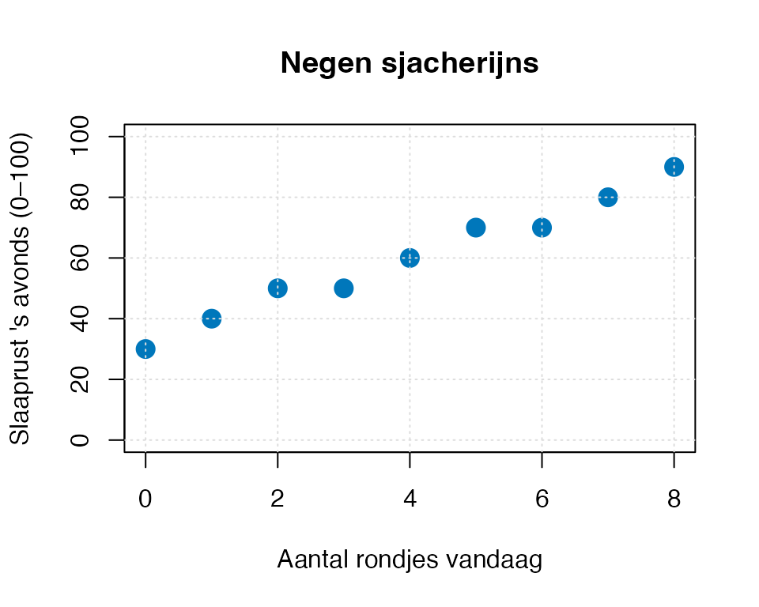

0. Opfris — enkelvoudige regressie vóór het echte werk
Sjonge sjonge — daar gaan we weer
Sjonge sjonge.
Alleen opstaan kost me al moeite, en dan ook nog dit hele MVDA-spoor afleggen — extra moeite per ding dat ik moet doen vandaag. En dat zijn er nogal wat. Regressie ophalen, want we hebben dat ooit gehad. ANOVA ergens halen — die was anders, of niet. ANCOVA, MANOVA, logistische, repeated, mediation. Sjonge sjonge.
Dus voor we daar aan beginnen, doen we eerst dit. Eén kort hoofdstuk waarin ik enkelvoudige regressie ophaal — niet om je voor schut te zetten als je het niet meer weet, maar omdat het echt wat helpt. Het is een tijdje geleden voor de meesten. Geen schaamte, geen toets. Even teruggaan naar het simpelste model dat we hebben.
En kijk: in die openingszin hierboven zit eigenlijk al alles wat je over enkelvoudige regressie hoeft te weten. “Alleen opstaan kost me al moeite” — dat is een basisniveau: wat er al is voordat enige \(X\) iets doet. “Extra moeite per ding” — dat is een helling: hoeveel er per eenheid bijkomt. Samen vormen die twee getallen een lijn. En een lijn — dat is wat een regressiemodel doet.
We doen dit korte hoofdstuk in zes stappen:
Negen sjacherijns — een mini-dataset waarbij je de regressielijn met het potlood kunt tekenen, zonder formule.
Formules erbij — pas dan praten we over \(b_0\) en \(b_1\) en wat ze precies betekenen.
Hoe goed werkt onze lijn? — DATA = FIT + RESIDU, en \(R^2\) als hoofd-maat.
Toetsen — model als geheel (\(F\)) versus voorspeller apart (\(t\)). En waarom ze hier hetzelfde zeggen.
Waarom MVDA straks anders wordt — vooruitkijk naar wat er verandert zodra er meer dan één voorspeller in het spel is.
Wat hierna komt — een korte teaser per thema, zonder uitleg.
Geen \(p\)-waarde-conventies, geen significantie-trucs, geen \(\alpha = .05\). Dat hoort bij thema 1 en verder. Hier alleen de mechanica.
0.1 Negen sjacherijns — intuïtief zien
De dag is begonnen. Negen diertjes liggen, hangen, of staan ergens — geen van allen heeft zin. Een das blijft in zijn hol. Een muis kijkt naar zijn nestje vol zandkorrels en weet wat-er-zou-moeten, maar het hoeft niet. Een vink kuiert wat door de struiken zonder zelfs te neuriën.
De vraag voor vandaag: als ze toch wat taakjes oppakken — hoe groot is het verschil aan het eind van de dag in hoe rustig ze kunnen slapen?
Elk diertje heeft één hoofdtaak voor vandaag. Sommige doen ’m niet (das blijft in hol), sommige doen ’m één of twee keer, en de bunzing — die ondanks zichzelf onafgebroken sluiproutes is gaan verkennen — doet hem acht keer. De ironie van de meest-sjacherijn-zijnde sjacherijn die de meeste rondjes afmaakt zonder het te merken.
We vragen: hoe is hun slaaprust ’s avonds, op een schaal van \(0\) tot \(100\)?
NoteVraag 0.1.a — Pen-en-papier (eerst kijken, dan rekenen)
Hieronder zie je de scatter van de data. Geen formule nog. Geen R. Alleen kijken.

a) Pak een potlood (of denk in je hoofd). Teken de lijn die volgens jou het beste door deze negen punten loopt. Niet uitrekenen — gewoon zien.
b) Waar snijdt jouw lijn de y-as? Dat is het basisniveau — een sjacherijn die nul rondjes doet (de das, die in zijn hol blijft): hoe rustig slaapt hij ’s avonds?
c) Hoeveel stijgt jouw lijn als je één eenheid naar rechts gaat? Dat is de helling — per extra rondje, hoeveel rustiger slaap je?
CautionAntwoord 0.1.a — open na je eigen poging
a) De punten liggen bijna op een rechte lijn. Met het oog teken je iets dat ongeveer door \((0, 32)\) en \((8, 88)\) loopt.
b) De lijn snijdt de y-as rond \(32\) (op schaal \(0\)–\(100\)). Dat is je intuïtieve \(b_0\) — de das die in zijn hol bleef komt toch op een slaaprust van \(32\) uit. Niet bovenmatig laag, niet bovenmatig hoog. Sjacherijn-baseline. Hij is er, hij ademt, hij eet ergens een wortel, maar veel verder dan een \(32\) komt hij niet zomaar.
c) Per extra rondje stijgt de lijn met ongeveer \(7\). Dus per taakje dat hij vandaag oppakt: \(+7\) slaaprust ’s avonds. Niet veel per taakje. Maar hij heeft het niet door dat dit gebeurt. De bunzing met \(8\) rondjes zit op \(32 + 8 \cdot 7 = 88\). De sjacherijn die ondanks zichzelf het meeste deed, slaapt het rustigst.
Inzicht. Je hebt zojuist met je oog gedaan wat een regressiemodel doet: een rechte lijn door een wolk punten leggen. Het basisniveau heet straks \(b_0\) (de intercept), de helling heet \(b_1\). Aandacht doet meer dan je denkt — ook voor sjacherijns. Hieronder zien we hoe je dat exact uitrekent.
0.2 Formules erbij — eindelijk
De regressievergelijking zegt: de uitkomst \(Y\) ligt op een rechte lijn van \(X\), plus een beetje toevalsruis \(e\):
\[Y_i = b_0 + b_1 X_i + e_i\]
In gewone woorden — let op de zelfreferentie met de openingsklacht:
\(b_0\) = basisniveau. “Alleen opstaan kost me al moeite” — wat er al is op het moment dat \(X = 0\). Bij ons: de slaaprust van een sjacherijn die geen enkel rondje afwerkt.
\(b_1\) = helling. “Extra moeite per ding” — hoeveel \(Y\) verandert per eenheid stijging in \(X\). Bij ons: hoeveel extra slaaprust per extra rondje.
\(e_i\) = residu. Wat het model nog niet snapt — de afwijking van punt \(i\) van de lijn.
Voor enkelvoudige regressie zijn \(b_0\) en \(b_1\) rechtstreeks uit de data te halen:
Sums-of-squares-vorm\(\dfrac{\text{SS}_{XY}}{\text{SS}_X}\) — wat wij hierboven gebruiken. Lekker concreet handrekenen.
Covariantie-vorm\(\dfrac{s_{XY}}{s_X^2}\) — covariantie van \(X\) en \(Y\), gedeeld door de variantie van \(X\). Zelfde getal: \(s_{XY} = \text{SS}_{XY} / (n-1)\) en \(s_X^2 = \text{SS}_X / (n-1)\), die \((n-1)\)-en delen weg.
Correlatie-vorm\(r_{XY} \cdot \dfrac{s_Y}{s_X}\) — gestandaardiseerd \(\beta\) (\(= r_{XY}\) bij enkelvoudige regressie) vermenigvuldigd met de spreidings-ratio van \(Y\) over \(X\). Handig om in te zien dat \(b_1\) ook iets te maken heeft met hoe sterk \(X\) en \(Y\) samen-variëren.
Pak gewoon de vorm die het meest natuurlijk is bij wat je voor je hebt. In dit hoofdstuk doen we de SS-vorm (rondste getallen voor onze sjacherijns).
(De correlatie \(r_{XY}\) zelf is iets anders en wordt vaak verward: \(r_{XY} = \text{SS}_{XY} / \sqrt{\text{SS}_X \cdot \text{SS}_Y}\). Dat is een getal tussen \(-1\) en \(+1\) — daar gaan we straks bij \(R^2\) verder op in.)
NoteVraag 0.2.a — Pen-en-papier (uit het hoofd te doen)
Voor onze negen sjacherijns:
a) Bereken \(\bar{X}\) en \(\bar{Y}\). (Tip: \(X = 0, 1, 2, \ldots, 8\) — wat is de som? En de som van \(Y = 30, 40, 50, 50, 60, 70, 70, 80, 90\)?)
b) Bereken \(\text{SS}_X = \sum (X_i - \bar{X})^2\).
c) Bereken \(\text{SS}_{XY} = \sum (X_i - \bar{X})(Y_i - \bar{Y})\).
d) Bereken \(b_1\) en \(b_0\).
e) Toets je antwoord tegen de R-output hieronder.
m_sj <-lm(slaap_rust ~ rondjes, data = sjacherijns)round(coef(m_sj), 3)
(Intercept) rondjes
32 7
CautionAntwoord 0.2.a — open na je eigen poging
a)\(\sum X = 0+1+\ldots+8 = 36\), dus \(\bar{X} = 36/9 = \mathbf{4}\). \(\sum Y = 30+40+50+50+60+70+70+80+90 = 540\), dus \(\bar{Y} = 540/9 = \mathbf{60}\). Twee verschillende gemiddelden — handig, anders zou je \(\bar{X}\) en \(\bar{Y}\) niet uit elkaar kunnen houden in de formules.
e) R-output bevestigt: \(b_0 = 32.000\), \(b_1 = 7.000\). Klopt op de honderdsten.
Inzicht. Je intuïtieve schatting bij 0.1.a (rond \(32\) en \(7\)) klopt precies met de wiskundige uitkomst. Een regressielijn is geen mysterieuze machine — je oog deed feitelijk hetzelfde wat de formule doet, alleen ruwer.
En let op het verhaal achter \(b_0 = 32\): zelfs een diertje dat geen enkel rondje aanpakt — een das die in zijn hol blijft — eindigt op een slaaprust van \(32\) op \(100\). Niet hoog, niet bovenmatig laag. Het basisniveau-leven gaat door. Aandacht is wat erbij komt, niet wat het leven dragend houdt.
0.3 Hoe goed werkt onze lijn? — DATA = FIT + RESIDU
We hebben een lijn: \(\hat{Y} = 32 + 7 \cdot X\). Maar hoe goed past die lijn? Voor elk diertje kunnen we drie getallen naast elkaar leggen:
DATA (\(Y_i\)) — wat we werkelijk gemeten hebben (de slaap_rust uit de tabel)
FIT (\(\hat{Y}_i\)) — wat het model voorspelt voor dit dier (uit de formule)
RESIDU (\(e_i = Y_i - \hat{Y}_i\)) — wat het model voor dit dier niet snapt
Het is een heel eenvoudige optelling: DATA = FIT + RESIDU. Letterlijk:
\[Y_i \;=\; \hat{Y}_i \;+\; e_i\]
Wat het model snapt komt in de FIT, wat het niet snapt blijft achter in het RESIDU. Voor onze negen sjacherijns:
Niet toevallig: de regressielijn wordt zo gekozen dat de residuen optellen tot nul. Het is een eigenschap van de kleinste-kwadraten-fit: de residuen zijn gebalanceerd rond nul. Anders zou je de lijn nog kunnen verschuiven.
Drie sums-of-squares — SST, SSM, SSE
De residuen optellen levert nul op — dat zegt niets over hun grootte. Daarvoor kwadrateer je ze (zoals bij variantie):
Dat is wat het model niet verklaart — opgeteld, in gekwadrateerde eenheden.
Tegenover SSE staan twee andere kwadraat-sommen:
\[\text{SST} \;=\; \sum (Y_i - \bar{Y})^2 \qquad \text{(Sum of Squares Total — alles wat $Y$ doet)}\]
\[\text{SSM} \;=\; \sum (\hat{Y}_i - \bar{Y})^2 \qquad \text{(Sum of Squares Model — wat het model wél verklaart)}\]
En tussen die drie zit een prachtige decompositie:
\[\text{SST} \;=\; \text{SSM} \;+\; \text{SSE}\]
In woorden: de totale variantie in \(Y\) valt netjes uiteen in een deel dat het model verklaart (SSM) en een deel dat het niet verklaart (SSE). Dat is DATA = FIT + RESIDU op variantie-niveau. Geen restje, geen lek — alles wat \(Y\) doet is óf via de voorspeller óf via de ruis.
NoteVraag 0.3.b — Pen-en-papier (de drie SS-en uitrekenen)
Voor onze sjacherijns met \(\bar{Y} = 60\):
a) Bereken \(\text{SST} = \sum (Y_i - \bar{Y})^2\). (Tip: \(Y - \bar{Y}\) wordt \(-30, -20, -10, -10, 0, 10, 10, 20, 30\). Kwadrateer en tel op.)
b) Bereken \(\text{SSE} = \sum e_i^2\) met de residuen uit vraag 0.3.a: \(-2, 1, 4, -3, 0, 3, -4, -1, 2\).
c) Bereken \(\text{SSM}\) via de decompositie: \(\text{SSM} = \text{SST} - \text{SSE}\).
d) Check \(\text{SSM}\) ook direct met \(\sum (\hat{Y}_i - \bar{Y})^2\). (De fits zijn \(32, 39, 46, 53, 60, 67, 74, 81, 88\).) Klopt het?
Inzicht. De decompositie \(\text{SST} = \text{SSM} + \text{SSE}\) is een boekhoudkundige eigenschap van de kleinste-kwadraten-fit. Geen verlies, geen winst — alle variatie in \(Y\) verdeelt zich exact over wat het model verklaart en wat het overlaat.
R² — proportie verklaarde variantie
Dan komt \(R^2\) er bijna vanzelf. Het is de fractie van de totale variantie die het model verklaart:
Oftewel: \(98\%\) van de variantie in slaap_rust wordt door rondjes verklaard. De overige \(2\%\) is wat het model overlaat — wat de bunzing rustiger maakt dan zijn fit voorspelt, wat de egel onrustiger maakt dan zijn fit voorspelt, enzovoort.
Tip\(R^2\) is de hoofdmaat, niet \(F\) of \(t\)
In de hoofdstukken hierna kom je nog veel toets-statistieken tegen (\(F\), \(t\), \(z\), \(\chi^2\)). Die zeggen iets over of het effect significant van nul afwijkt. Maar de vraag hoe goed werkt het model — dat is \(R^2\). Een model met \(R^2 = .98\) verklaart bijna alles wat er valt te verklaren. Een model met \(R^2 = .12\) verklaart een sliertje. En dat is een betekenisvol getal, ook zonder dat er een \(p\)-waarde aan hangt.
In MRA krijgt \(R^2\) een correctie voor het aantal voorspellers (adjusted \(R^2\)). In LRA (binair \(Y\)) bestaat \(R^2\) niet in deze vorm en gebruiken we een pseudo-\(R^2\). Maar het basisidee — welk deel van de variantie verklaart het model — komt terug in alle thema’s. DATA = FIT + RESIDU is de spil.
0.4 Toetsen — model als geheel én voorspeller apart
Tot nu toe weten we wat de lijn is (\(b_0\) en \(b_1\)), en hoe goed hij past (\(R^2\) via DATA = FIT + RESIDU). Wat we nog niet weten: of het effect significant van nul afwijkt in de populatie. Daarvoor toetsen we.
Er zijn eigenlijk twee vragen die je kunt stellen — en het is goed om die uit elkaar te houden, want straks bij MVDA worden ze écht verschillend:
Vraag
Wat het meet
Toets
Hoe goed werkt de lijn?
fit-kwaliteit van het hele model
\(F\), \(R^2\)
Wat doet de lijn?
effect-grootte per voorspeller
\(b\), \(t\)
Bij enkelvoudige regressie zijn die twee vragen één en dezelfde — er ís maar één voorspeller, dus hoe goed werkt het model en wat doet deze voorspeller zijn letterlijk dezelfde vraag. Wiskundig: \(F = t^2\) en \(R^2 = r^2\). Bij MVDA (vanaf thema 1, met meerdere voorspellers tegelijk) lopen ze uit elkaar — het hele model kan iets verklaren terwijl een losse voorspeller niets doet, of omgekeerd.
Toets 1 — \(F\)-toets op het model als geheel.“Doet het model iets, vergeleken met geen voorspellers?” Vergelijkt de variantie verklaard door het model met de niet-verklaarde variantie:
Toets 2 — \(t\)-toets op de voorspeller-coëfficiënt.“Wijkt \(b_1\) van nul af?” Vergelijkt de coëfficiënt met zijn standaardfout:
\[t = \frac{b_1}{SE_{b_1}}\]
summary(m_sj)
Call:
lm(formula = slaap_rust ~ rondjes, data = sjacherijns)
Residuals:
Min 1Q Median 3Q Max
-4 -2 0 2 4
Coefficients:
Estimate Std. Error t value Pr(>|t|)
(Intercept) 32.000 1.800 17.78 0.000000439 ***
rondjes 7.000 0.378 18.52 0.000000332 ***
---
Signif. codes: 0 '***' 0.001 '**' 0.01 '*' 0.05 '.' 0.1 ' ' 1
Residual standard error: 2.928 on 7 degrees of freedom
Multiple R-squared: 0.98, Adjusted R-squared: 0.9771
F-statistic: 343 on 1 and 7 DF, p-value: 0.0000003319
NoteVraag 0.4.a — Pen-en-papier (en R)
a) Lees uit de R-output: wat is de \(F\)-waarde van het model? En wat is de \(t\)-waarde van rondjes?
b) Bereken \(t^2\). Klopt dat met \(F\)?
c) Wat zijn de \(p\)-waardes van beide toetsen? Verschillen ze?
d) Verklaar in één zin waarom dit zo is bij enkelvoudige regressie.
CautionAntwoord 0.4.a — open na je eigen poging
a)\(F = 343\) op \(df_1 = 1, df_2 = 7\). \(t = 18.52\) voor rondjes.
b)\(t^2 = 18.52^2 \approx 343\). ✓ Exact gelijk aan \(F\).
c) Beide \(p < .001\). Identiek (de R-output rondt allebei af op \(< .001\)).
d) Bij enkelvoudige regressie is de enige voorspeller in het model dezelfde coëfficiënt waar de \(t\)-toets op slaat. “Doet het model iets?” en “Doet deze ene voorspeller iets?” zijn letterlijk dezelfde vraag, alleen anders geformuleerd. Wiskundig: \(t^2 = F\) wanneer \(df_1 = 1\). Het maakt geen ruk uit welke toets je rapporteert — kies wat past bij de uitleg.
TipOnthouden — bij één voorspeller zijn \(F\) en \(t\) broers
Toets
Wat hij toetst
Bij enkelvoudige regressie
\(F\)
model als geheel
\(= t^2\) van de helling
\(t\)
voorspeller-coëfficiënt
\(= \sqrt{F}\)
Pas in MVDA (vanaf thema 1) — als er meerdere voorspellers tegelijk in het model zitten — gaan deze twee niet meer dezelfde vraag stellen. Het model-als-geheel (\(F\)) kan significant zijn terwijl geen enkele losse voorspeller dat is, en omgekeerd kan een losse voorspeller significant zijn terwijl het model-als-geheel niets oplevert. Dat is de hele crux van multipele regressie.
0.5 Waarom MVDA straks anders wordt
Bij enkelvoudige regressie is er één \(X\) en één \(Y\). Eén vraag, eén lijn, één \(b_1\). Het maakt niet uit of je \(F\) of \(t\) rapporteert — ze zeggen hetzelfde.
Bij meervoudige regressie (MRA, thema 1) komen er meerdere \(X\)-en bij. Het model wordt:
Nu kun je drie verschillende vragen stellen die niet meer dezelfde zijn:
Model als geheel — “Verklaart het geheel van voorspellers iets?” — overall \(F\)-toets.
Voorspeller apart — “Wat doet deze ene voorspeller, gecontroleerd voor de andere?” — \(t\)-toets per coëfficiënt.
Klopt het allemaal — “Houden de aannames stand?” — assumpties checken (lineariteit, gelijke spreiding, normaliteit, geen multicollineariteit, geen invloedrijke outliers).
Vanaf thema 1 doe je deze drie altijd in deze volgorde. Het 3-stappen-plan noemen we het: Model — Voorspellers — Assumpties. Dat is jouw werkstroom voor MRA, ANCOVA, MANOVA, RMA — overal waar meerdere voorspellers tegelijk in het spel zijn.
TipWaar gaat het bij MVDA over?
Bij enkelvoudig
Bij MVDA
Eén \(X\) verklaart iets van \(Y\)
Meerdere \(X\)-en delen samen iets te zeggen over \(Y\)
\(F\) en \(t\) zijn dezelfde toets
\(F\) en \(t\)-per-coëfficiënt zeggen verschillende dingen
Geen partial-effecten
Wel partial-effecten (effect van \(X_1\)na controle voor\(X_2\))
Geen multicollineariteit
Wel: voorspellers kunnen op elkaar lijken
Eén lijn in twee dimensies
Een vlak (of een hyper-vlak) in meer dimensies
Vanaf thema 1 wordt elk van deze elementen één voor één behandeld. Hier in 0 alleen de pure-enkelvoudige-vorm als ankerpunt.
0.6 Wat hierna komt — kort overzicht van zeven thema’s
#
Techniek
Wanneer
Dier
1
MRA — multipele regressie
\(Y\) interval, meerdere \(X\)-en (interval)
eekhoorn + mier
2
ANOVA — variantie-analyse
\(Y\) interval, \(X\)-en nominaal (factoren)
mol
3
ANCOVA
\(Y\) interval, mengvorm nominaal + interval
bever
4
LRA — logistische regressie
\(Y\) binair (wel/niet)
pad
5
MANOVA — multivariate ANOVA
meerdere \(Y\)-en tegelijk, \(X\) nominaal
leeuw
6
RMA — repeated measures
\(Y\) herhaald gemeten op zelfde individu
kameleon
7
Mediation — indirecte effecten
\(X \to M \to Y\), pad via tussenliggende variabele
slak
Bij elk thema doorloop je dezelfde drie stappen: model — voorspellers — assumpties. Bij elk thema heb je een dier dat het verhaal draagt. En bij elk thema krijg je weinig theorie vooraf — eerst aan de slag, theorie wanneer het aankomt.
Sjonge sjonge. Daar gaan we dan. Veel succes.
NoteWanneer terugkomen naar dit opfris-hoofdstuk
Als \(b_0\) of \(b_1\) niet meer staat — sectie 0.2.
Als je twijfelt of \(F\) en \(t\) hetzelfde of iets anders meten — sectie 0.4.
Als MVDA-thema’s voelen alsof ze ergens anders over gaan dan enkelvoudige regressie — sectie 0.5.
Anders: doorlopen, één keer, en dan vooruit. Dit is geen tentamen-hoofdstuk.